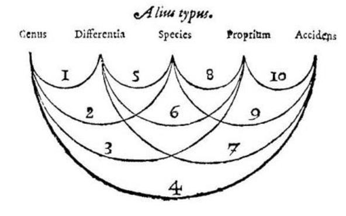

flowchart LR A[Predicates] --> B[Actual things] --> C[Substance] --> D[...]

**Work in progress*
Few essays in the history of philosophy are as impactful, less as inscrutable, and none as impactful for being inscrutable as Aristotle’s Categories.
The central tension of this work between utterance (τὰ λεγόμενα) and beings (τὰ ὄντα) has divided readers for over twenty-five centuries as to what it is actually about. Language? Logic? Metaphysics? Something else?
Introducing such an evasive text is impossible: the full account of its meaning and history is scarcely imaginable, while a few factual “hors d’oeuvres,” no matter how well presented, fail to introduce the actual work in question.
Summary cannot introduce us to the Categories. Instead we must interpret it.
To interpret something means to put it in your own words. In interpretation the barrier between the work being interpreted and the work of interpretation begins to sway. This softening of the offset between ourselves and the work is the essence of what we call being “introduced.” Interpretation is always difficult, not just because it is “hard,” but because it is productive.
This introduction, therefore, is nothing other than a plain English interpretation of the Categories, where “plain” hardly means easy or simple. Decisions have been made and points have been rendered in order to practically engage the reader with the material ordering, apparently, the words onto the page.
1 Things can have a common name for different reasons
Synonyms have a common name for the same reason: a cat and a bird are both “animals” because they are both living entities.
Homonyms have a common name for different reasons: a cello and a microscope are both “instruments,” the former because it produces music, and the latter because it is a tool for science.
Paronyms share a common root: to preach and preacher, for instance.
2 Beings can be predicates, and they can be properties
Utterances (τὰ λεγόμενα) can be interwoven or not: the former makes sentences such as “The man runs,” while the latter produces simple terms such as “man,” and “runs.”
Beings (τὰ ὄντα) can distinguished in two ways: as predicates, or as properties.
Predicates define a subject (καθ’ ὑποκειμένου λέγεται). Human defines an individual person, and color defines what blue is. Predicates are always generic.
Particular things are the opposite of a predicate. You cannot define anything using a particular. Particulars cannot complete a sentence of the type “X is ___.”
Properties belong to a subject (ἐν ὑποκειμένῳ ἐστιν). Examples include colors, height, length, location, and so on: you will never encounter “blue” or “tall” on its own, but only as an attribute of a pre-existing thing.
Substance (ἡ οὐσία) opposes property. And what is that, substance? Indeed, the rest of this work – and the overall movement of philosophy itself – will radically address this question. But for the time being, you can think of substance as individuality: that by which you can point to something as a particular entity.
But what about the subject? If predicates define a subject, and properties belong in a subject, shouldn’t the subject oppose them instead of particulars and substance?
Not exactly, because predicates and properties can themselves be subjects! For the human that this man is is itself an animal, and for this man who wears a jacket that is green, that green is itself a color. Then a subject can either be a particular thing, or predicates describing that thing, properties belonging in that thing, or predicates describing those properties.
The two conditions by which we can distinguish beings, as predicates or as properties, in turn produce a table with four categories:
| Not a predicate (Particular things) |
Predicate | |
|---|---|---|
| Not a property (Substance) |
This man | Human |
| Property | This knowledge | Knowledge |
- Property predicates are define properties: knowledge, color, shape, and so on.
- Substantial predicates are define particulars: human, horse, car, and more general labels like animal, vehicle, and so on.
- Property particulars are specific details about particular things: the flakiness of a pastry, the specific way someone walks, the sound your car makes when it turns on.
- Then, finally, substantial particulars: the individual things everything surrounding you at all times. They can be defined and have properties but themselves never define or belong to anything else.
From this a certain ordering about the nature of the world has been implanted: there is a sense in which definitions, concepts, descriptions, and possibly language itself come second to the particular things we encounter around us.
3 Genera also define things
In the language of Aristotle, predicates of actual things are “species.” Predicates of these predicates are “genera.”
Genera apply downward to the particulars. So if a man is a human, and humans are animals, then that man is also an animal.
Species of a genus are distinguished by “differentiae.” Species of animal can be distinguished by being footed, winged, and so on.
Differentiae of one genus have no bearing toward an unrelated genus: knowledge, for instance, cannot be distinguished by footed, winged, and so on.
But differentiae of a genus can apply downward: the bird genus, underneath animal, itself contains species that may be distinguished as being footed (flightless), winged (flighted), and so on. This does not always hold (human is not distinguished by being footed or winged), but it is possible.
4 The categories
Every word (τὰ μηδεμίαν συμπλοκὴν λεγόμενα) ultimately refers to one of the following:
| English | Greek | Section |
|---|---|---|
| Substance | οὐσία | Section 5 |
| Quantity | πόσος | Section 6 |
| Quality | ποιός | Section 7 |
| Relation | πρός τι | Section 8 |
| Place | ποῦ | Not discussed |
| Time | ποτὲ | Not discussed |
| Posture | κεῖσθαι | Section 8 |
| State | ἔχειν | Not discussed |
| Action | ποιεῖν | Not discussed |
| Affection | πάσχειν | Section 7 |
Insofar as speech consists of words, these ten categories constitute the meaning of speech in general.
Insofar as words refers to actual things, these ten categories catalog any being whatsoever.
Here also Aristotle notes here that only combined utterances, statements, strictly speaking, be true or false.
5 Substance
Of substance (ἡ οὐσία) there are two kinds: first and second.
5.1 First substance
First substance refers to actual things: particular entities that we can point to.
Aristotle calls first substance the “first utterance” because if it did not exist, species, genera, differentiae, and properties would have no referent:
Without first substance there would be nothing to say.
5.2 Second substance
Secondary substance define particulars.
This makes them predicate synonymously: if this man is a human, then he is also the definition of human, animal. But properties are homonymous: a man’s having a certain skin shade does not imply he is a color.
Species is more like substance than genre:
- It is “nearer” to substance in that it is a better substitute: it is more fitting to call to this man a human than to call him an animal.
- Species has less capacity for description than genre. Therefore it is behaves closer to first substance which, you will recall, is predicated of nothing.
Despite being predicates, second substances are still truly substances:
- They alone define first substance. No property of a man – his height, knowledge, age, posture – answers what he is: human.
- They possess properties. If this man walks on two legs and has knowledge, so do man and animal.
- The are not properties because they predicate synonymously (see above).
5.3 Defining substance
What is substance? Let us think through it a bit more carefully.
5.3.1 First substance
Individiual entities are substance. They are defined by predicates.
All substance can possibly refer to, then, is its very ability to be referenced.
This is what Aristotle means by his famous claim that substance appears to mark τόδε τι, “a this.”
Here both words share equal weight:
- τόδε, “this,” is a demonstrative: that which has been pointed out.
- τι, “a,” is the indefinite pronoun: it conveys the generality of the definition.
When we strip particular things of their qualifiers, all they refer to in general is their ability to be referred to as whatever they specifically are.
Substance, then, in an unusual turn of the word, is thoroughly remarkable: it is the very origin of every possible remark.
TODO: This also refers to the ACT of pointing substance out. Substance points to the activity of pointing out.
old text:
This means any utterance, no matter how, what, where, or why it is said, must ultimately refer to a primary substance.
This is exactly the definition Aristotle gives for primary substance: something that has been pointed out (τόδε τι).
Substance never does any pointing: it never stands in for another entity. Instead substance is that which in every case is pointed to: clarified by predicates or defined by properties. It is the seat of all possible signification.
For this reason substance itself cannot be defined as anything but the mere act of pointing
5.3.2 Second substance
Accordingly, second substance is the defining remark: it distinguishes first substance by its kind.
If first substance is remarkability, then second substance fills in this potential by telling us what it actually is.